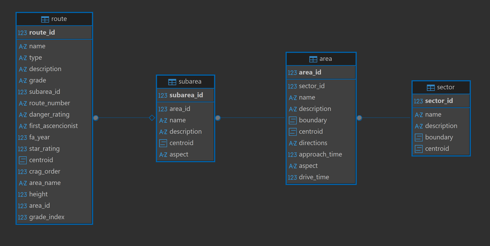
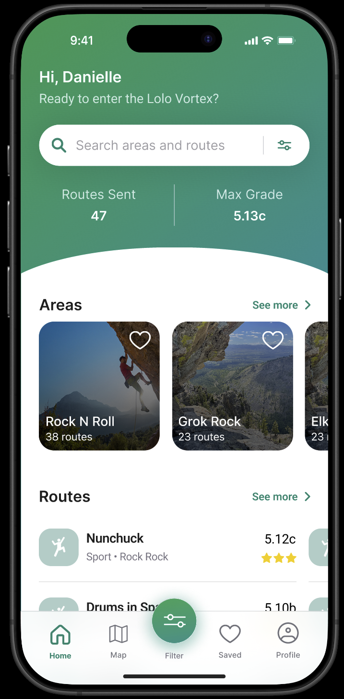
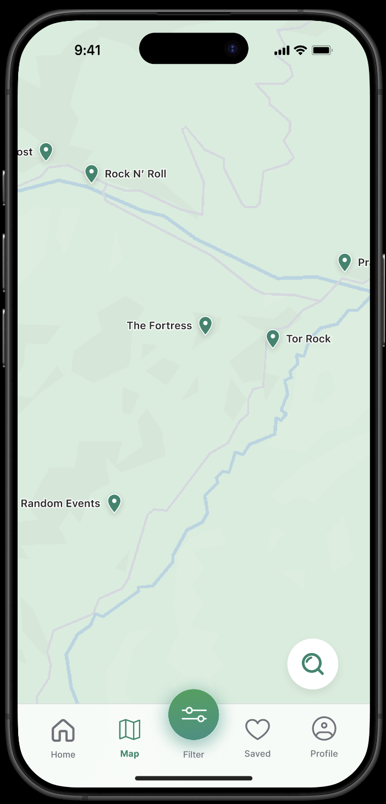

A geospatial mobile application for exploring climbing routes near Lolo Pass.
GitHub RepoThe Lolo Climbing App is a custom-built geospatial application designed to help climbers discover routes, filter by characteristics, and explore crags in an intuitive way.
PostgreSQL + PostGIS
Django
JavaScript
Leaflet / Mapping
HTML & CSS
I designed and implemented the spatial database architecture, including route hierarchies, optimized filtering workflows, and built backend endpoints to serve geospatial data efficiently. I also acted as project manager in a team of three and delegated frontend and UX/UI tasks.


